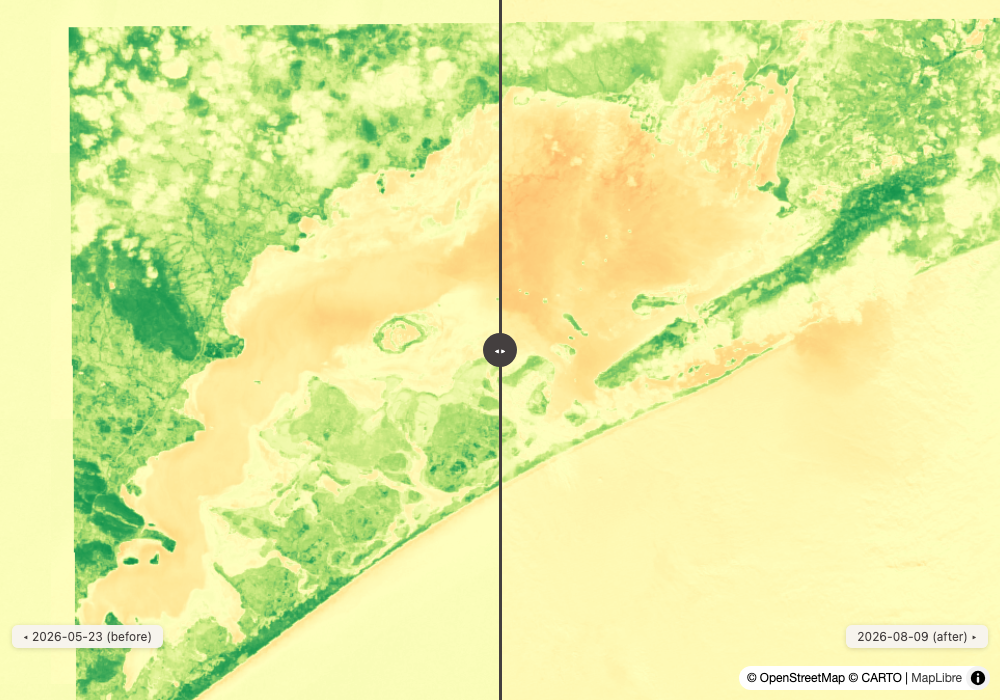
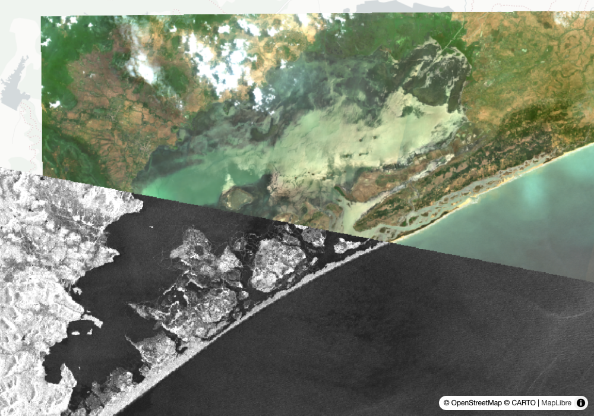
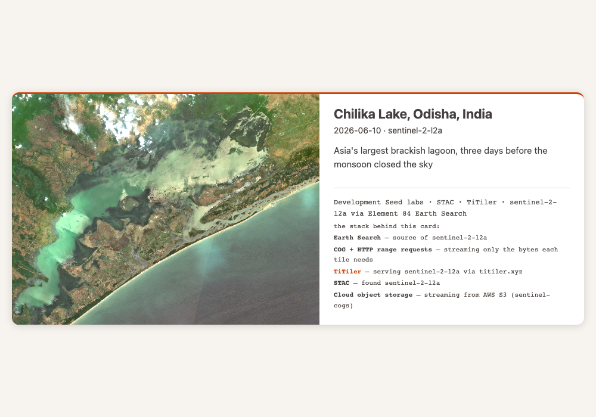
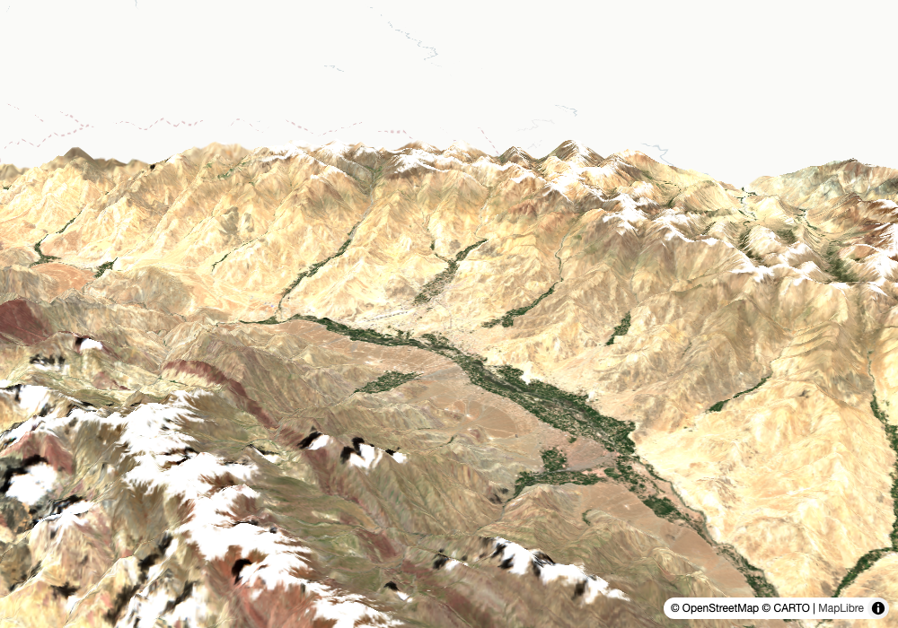

Round 1 — what a tool has to say so a model can't fill the gap itself
1
grounding
fire duty officer
Input
What are conditions right now around the Bug fire in Lassen County?
What the tools returned
signals:
"no rain ≥1mm in the last 14 days"
"peak wind today 28 km/h from the NW"
"4 active wildfires within ~150 km"
latest_look: S2A_10SGJ_20260810_0_L2A 2026-08-10 cloud 9.4 covers_aoi_pct 48.9
next_looks: LANDSAT 9 2026-08-11 18:39 UTC
SENTINEL-2C 2026-08-11 19:03 UTC
note: "current conditions from live sources — not a risk model, not a prediction"
Our read
The tool returns signals as finished sentences, not raw numbers for a model to narrate. That is the whole design: a small model asked to "summarise conditions" from a JSON blob will reach for background knowledge and invent a fire-risk rating. Given pre-written verbatim signals it has nothing left to invent, and the note refuses the inference the phrasing would otherwise invite. Worth saying plainly: the wind is 28 km/h from the NW and four fires are burning within 150 km, and this still is not a risk assessment.Learning → This is the structural version of a grounding prompt. geo-assistant ends its system prompt with "do not use background knowledge, only use the tools above" — a rule the model can ignore. Pre-writing the sentence is the same rule enforced where the model has no vote.
conditions_brief — dryness + wind + events + latest look + next pass, composed into verbatim signals
2
honest-empty
the confabulation check
Input
Do you have Himawari data?
What the tools returned
{"result": []}
Our read
Himawari is a real and heavily used geostationary satellite. It is not in these three catalogs. The distinction the tool's own docstring insists on: an empty result means "not in these three catalogs", not "no such data exists" — and the docstring names Himawari as the live example, so the tool ships knowing its own blind spot. An agent that reports "no Himawari data available" has said something false while returning something true.Learning → The hardest honesty problem in a tool surface is not wrong answers, it's empty ones. Zero results is the shape most likely to be narrated into a confident falsehood, and the fix is in the docstring the model reads, not the code.
search_datasets across earth-search, veda, planetary-computer
Round 2 — finding 1: our own geocoder still never fires
3
⚠ finding
Story 1.3, still blocked
Input
Two geocodes, run back to back: "Chilika Lake" and "Leh Ladakh".
What the tools returned
geocode("Chilika Lake")
name: Chilika Lake, Krushna Prasad, Puri, Odisha, India
source: nominatim
geocode("Leh Ladakh")
name: Living Stones, Leh, Ladakh, Upper Karzoo, Zangsti,
Leh, Leh district, Ladakh, 194101, India
source: nominatim
bbox_note: "geocoder returned a point, not an extent —
widened to a 0.3 deg box around it"
Our read
Two for two on source: nominatim. The Gazet-first branch in tools.py is coded and dormant, because gazet.ds.io fronts the Streamlit demo rather than the FastAPI /search, so it activates only when a JSON endpoint exists or GAZET_URL is set. The second result is the sharper half: "Leh Ladakh" resolved to a guesthouse, not the town — Living Stones is a place to stay in Leh, and OpenStreetMap ranked it first. The tool caught the shape of the error (a point where an extent was wanted) and widened the box, which is honest and is not the same as being right.Learning → This is the third field test to file the same thing, and it is blocked on a one-line ask, not on build capacity. The cost is not cosmetic: the Stack panel credits Gazet as DevSeed-created on maps that ran entirely on OpenStreetMap. Ambiguous place names are exactly what a small-model geocoder over Overture was built for.
geocode — Gazet-first, Geodini second, Nominatim last. Legs two and three are not wired
Round 3 — the loop, and the choice an agent gets wrong
4
coverage
the scene-picking trap
Input
Find me a clear recent Sentinel-2 scene over Chilika Lake.
What the tools returned
S2B_45QUC_20260605_1_L2A cloud 2.2 covers_aoi_pct 24.2
S2B_45QTB_20260605_0_L2A cloud 5.0 covers_aoi_pct 17.2
S2C_45QUB_20260610_0_L2A cloud 21.9 covers_aoi_pct 97.9
Our read
"Clear" and "useful" point in opposite directions here, and the ranking makes the trap explicit: the two cleanest scenes see a fifth of the lagoon. Sorted on cloud alone an agent picks the 2.2% scene, renders a beautiful card of a quarter of the subject, and never mentions it. covers_aoi_pct exists so that choice is visible rather than implicit — the right answer is the 21.9%-cloud scene at 97.9% coverage, and saying why is part of the answer.Learning → A tool that returns a ranked list has already made a decision on the model's behalf. The defensible move is to return the axis it did not sort on, in the same object, so the tradeoff can't be silently lost.
search_imagery — covers_aoi_pct on every item, full_coverage_set when nothing single covers
5
extent
the number that is about the wrong area
Input
What's the NDVI over that Chilika scene?
What the tools returned
mean: 0.0425
median: -0.0073
percentile_98: 0.6032
valid_percent: 96.71
extent_note: "stats cover the full item extent (1.1 x 1.0 deg).
Pass aoi_geojson to clip to your subject"
Our read
A mean NDVI of 0.04 would read as near-total absence of vegetation. It isn't: the scene is a brackish lagoon plus a slab of the Bay of Bengal, so most pixels are water and water sits near or below zero. The median of −0.007 is the tell, and the 98th percentile of 0.60 shows the vegetation is there, just outnumbered. The extent_note is the tool saying, unprompted, that the question asked and the question answered are different questions.Learning → Whole-scene statistics are the most quietly wrong number in earth observation. Every asked-for stat should carry what area it covers, because the caller almost always meant a smaller one.
compute_statistics — band math via the catalog's tiler statistics endpoint, with an unrequested scope warning
Round 4 — finding 2: the delta that means nothing, and the instrument that answers it
6
⚠ finding
the headline nobody should write
Input
How did vegetation around Chilika Lake change from pre-monsoon to monsoon?
What the tools returned
tile: 45QUB
before: S2A_45QUB_20260523_1_L2A 2026-05-23 cloud 16.0 mean 0.0605
after: S2C_45QUB_20260809_0_L2A 2026-08-09 cloud 51.7 mean 0.0074
delta: -0.0531
delta_pct: -87.8
Our read
As arithmetic this is correct. As ecology it is backwards — the monsoon is when Odisha greens, and a −87.8% headline says the opposite. Two independent things break it. First, the after scene is 51.7% cloud: cloud pushes NDVI toward zero, and half the pixels are cloud. Second, and worse, delta_pct is a percentage on a near-zero baseline — a mostly-water scene has a mean NDVI of 0.06, so an absolute move of 0.05 becomes −87.8% and is reported to one decimal place as though that precision meant something.
open the swipe map ↗Learning → The fix already exists in this codebase three times over and this tool doesn't use it. next_pass returns a note, compute_statistics returns an extent_note, conditions_brief returns a note. compare_dates returns a bare number. Filed: return a caveat field when either scene's cloud crosses a threshold or the baseline mean is near zero. Both conditions are already computed — they just aren't said.
compare_dates — matched MGRS tile, both means, the delta, and a swipe map
7
instrument
the answer the optical question couldn't give
Input
Then what should I have used over a monsoon lagoon?
What the tools returned
search_imagery(sentinel-1-grd, Chilika, Jul 15 – Aug 11)
S1D_IW_GRDH_1SDV_20260807T001306…
cloud_cover: null
covers_aoi_pct: 100
orbit_state: descending
next_pass(19.685, 85.250, days=3)
SENTINEL-1C 2026-08-12 12:02 UTC radar (day or night, sees through cloud)
SENTINEL-2B 2026-08-14 05:03 UTC optical
Our read
cloud_cover: null and covers_aoi_pct: 100, on August 7, in the middle of the monsoon that defeated the optical comparison two cards up. Radar does not care about the sky. The pass prediction makes the same point forward-looking: the next radar look is two days out and the next usable optical look is four, and in monsoon Odisha the optical one may well be cloud anyway.
open the two-instrument map ↗Learning → next_pass is careful to say what it is: "swath geometry, not the acquisition plan — a pass is a possible capture". That sentence is why the tool is usable for planning. The pattern is developmentseed/eo-predictor, which does this across many more constellations.
search_imagery on sentinel-1-grd, next_pass propagating live Celestrak TLEs with Skyfield
Round 5 — live Earth, and the things people keep
8
live
disaster desk
Input
Anything active near Wenzhou, and what did the weather actually do?
What the tools returned
active_events
Super Typhoon Dolphin EONET 2026-08-09 [120.6, 27.9]
Flood in China GDACS Orange [120.69, 28.16]
2026-07-31 → 2026-08-11
weather_summary(28.156, 120.688)
2026-08-08 precip 4.5 mm wind 23.4 km/h
2026-08-09 precip 140.7 mm wind 41.2 km/h
2026-08-10 precip 92.1 mm wind 29.6 km/h
2026-08-11 precip 22.7 mm wind 13.4 km/h
Our read
Two independent sources agreeing, which is the point of running both: NASA EONET has the typhoon, GDACS has an Orange flood alert at nearly the same coordinates, and the weather record shows why — 140.7 mm in a single day on the 9th with winds at 41 km/h, then 92 mm on the 10th. The alert and the rainfall are separate feeds that were never joined by us, so the agreement is evidence rather than restatement.Learning → Wind direction is in this response too, and it is the field people forget to ask for. For smoke, ash and plume questions the bearing matters more than the speed, and it is meteorological convention — the direction the wind comes from.
active_events (EONET + GDACS), weather_summary (Open-Meteo, no key)
9
artifact
the thing someone can actually post
Input
Give me something shareable of Chilika before the monsoon closed the sky.
What the tools returned
postcard-chilika-lake--odisha--india-2026-06-10.html 2.4 MB
pixels: embedded as a data URI
framed: to the AOI bbox, snapped to a standard card shape
stack: printed in the credit block, no live URLs
Our read
The size is the feature. 2.4 MB because the image is baked in — no signed tile URL to expire, no local path, nothing that goes blank next week. A live map is the right artifact for exploring and the wrong one for sending to somebody. Framing to the AOI rather than the scene is what keeps scene-edge nodata off the card.
open the postcard ↗Learning → Where and whether to post it stays the person's call. The tool's job is to make the artifact survive being sent, and a live tile URL does not.
render_postcard — data-URI pixels, attribution baked in, stack_layer in the credit block
10
3d
and the primitive underneath
Input
Show me Leh in 3D. And give me the raw NDVI tile URL for the Chilika scene.
What the tools returned
render_map_3d state:
bbox: [77.437, 34.022, 77.737, 34.322]
terrain: true exaggeration: 1.8
coverage_pct: 100 scene: S2B_43SGT_20260717_0_L2A (cloud 11.5)
tile_url_template →
https://titiler.xyz/stac/tiles/WebMercatorQuad/{z}/{x}/{y}.png
?url=…/sentinel-2-l2a/items/S2C_45QUB_20260610_0_L2A
&expression=(b1-b2)/(b1+b2)&assets=nir&assets=red
&rescale=-1,1&colormap_name=rdylgn
Our read
Ladakh in July is the easy case for terrain — high relief, almost no cloud, 100% coverage. Elevation comes from keyless AWS Terrarium tiles, so the HTML is shareable with no account behind it. The second half is the part developers actually want: every render is just a tile URL, and the tool will hand it over. Drop it into MapLibre, Leaflet, QGIS, anything — no dependency on us at runtime.
open the 3D fly-through ↗Learning → Both renderers now return the state they built the HTML from — bbox, per-layer bounds and tiles, coverage, the compare flag. That is what makes a map checkable by an eval instead of only by a person opening the file and looking at it.
render_map_3d over Terrarium terrain; tile_url_template resolving assets and band math to an XYZ template
Reproduce
git clone https://github.com/dannybauman/groundstation && cd groundstation
bash scripts/doctor.sh # walks the setup chain, prints the fix
uv run evals/unit_checks.py # offline checks
uv run evals/run_evals.py # live checks against real endpoints
uv run scripts/field_test.py docs/field-test-2026-08-11.cases.json # rebuild this page